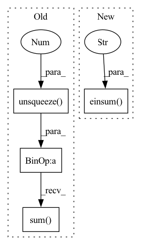

Pattern ID :13761

Before Change
x = x.unsqueeze(-1)
x = self.project_to_steps(x) // BxCxTxS
x = self.dropout(x)
x = x.unsqueeze(0).expand(targets.size(0), -1, -1, -1, -1)
copies, bsz, dim, tsz, steps = x.shape
steps = min(steps, tsz - self.offset)
predictions = x.new(bsz * copies * (tsz - self.offset + 1) * steps - ((steps + 1) * steps // 2) * copies * bsz)
labels = torch.zeros_like(predictions)
weights = torch.full_like(labels, 1 / self.n_negatives) if self.balanced_classes else None
start = end = 0
for i in range(steps):
offset = i + self.offset
end = start + (tsz - offset) * bsz * copies
pos_num = (end - start) // copies
predictions[start:end] = (x[..., :-offset, i] * targets[..., offset:]).sum(dim=2).flatten()
labels[start:start + pos_num] = 1.
if weights is not None:
weights[start:start + pos_num] = 1.
After Change
).flatten()
else:
pos_num = (end - start) // copies
predictions[start:end] = torch.einsum(
"bct,nbct->nbt", x[..., :-offset, i], targets[..., offset:]
).flatten()
labels[start : start + pos_num] = 1.0
if weights is not None:
weights[start : start + pos_num] = 1.0
In pattern: SUPERPATTERN
Frequency: 4
Non-data size: 4
Instances
Fragment ID: 45979389
Project Name: mohammadkhalifa/fairseq-tagging
Commit Name: 3335de5f441ee1b3824e16dcd98db620e40beaba
Time: 2020-02-29
Author: alexei.b@gmail.com
File Name: fairseq/models/wav2vec.py
M Class Name: Wav2VecPredictionsModel
N Class Name: Wav2VecPredictionsModel
M Method Name: forward(3)
N Method Name: forward(3)
M Parent Class: nn.Module
N Parent Class: nn.Module
M File Name: fairseq/models/wav2vec.py
N File Name: fairseq/models/wav2vec.py
M Start Line: 411
M End Line: 439
N Start Line: 638
N End Line: 691
'>
Before Change
expanded_indices = expand_dim(value_indices, dim=4, k=d_head, unsqueeze=True)
selected_values = expanded_values.gather(-2, expanded_indices)
out = (attn.unsqueeze(-1) * selected_values).sum(dim=-2)
out = out.transpose(1, 2).reshape(b, t, -1)
return self.to_out(out)
After Change
queries = queries.chunk(2, dim=-1)
queries = torch.stack(queries).reshape(2, b, t, h, -1)
dots = torch.einsum("pbthd,hnpd->bthpn", queries, self.keys)
scores, indices = dots.topk(k=self.topk, dim=-1)
scores, indices = map(lambda x: x.chunk(2, dim=2), (scores, indices))
all_topk = self.topk ** 2
'>
Fragment ID: 45979388
Project Name: lucidrains/product-key-memory
Commit Name: 915dd922ef8e168f7970d5336d0ba79b4f57fe47
Time: 2020-06-06
Author: lucidrains@gmail.com
File Name: product_key_memory/product_key_memory.py
M Class Name: PKM
N Class Name: PKM
M Method Name: forward(2)
N Method Name: forward(2)
M Parent Class: nn.Module
N Parent Class: nn.Module
M File Name: product_key_memory/product_key_memory.py
N File Name: product_key_memory/product_key_memory.py
M Start Line: 36
M End Line: 71
N Start Line: 35
N End Line: 64
'>
Before Change
return self.conv((adj.unsqueeze(1) @ x.unsqueeze(-1)).squeeze(-1)).view(x.size(0), self.out_channels, self.out_features)
def feature_adjacency(self, x, y):
fadj = torch.stack([(x[i].unsqueeze(-1) @ y[i].unsqueeze(-2)).sum(dim=[0,1]) for i in range(x.size(0))])
fadj += fadj.transpose(-2, -1)
return self.row_normalize(self.sgnroot(fadj))
After Change
return self.conv((adj.unsqueeze(1) @ x.unsqueeze(-1)).squeeze(-1)).view(x.size(0), self.out_channels, self.out_features)
def feature_adjacency(self, x, y):
fadj = torch.stack([torch.einsum("ca,ncb->ab", x[i], y[i]) for i in range(x.size(0))])
fadj += fadj.transpose(-2, -1)
return self.row_normalize(self.sgnroot(fadj))
'>
Fragment ID: 45979384
Project Name: wang-chen/lgl
Commit Name: a75a8d1187cd17c8bb7f5591aa71f85188ad4f4c
Time: 2020-12-09
Author: jeffsan@gmx.com
File Name: models/layer.py
M Class Name: FeatTrans1d
N Class Name: FeatTrans1d
M Method Name: feature_adjacency(3)
N Method Name: feature_adjacency(3)
M Parent Class: nn.Module
N Parent Class: nn.Module
M File Name: models/layer.py
N File Name: models/layer.py
M Start Line: 84
M End Line: 84
N Start Line: 84
N End Line: 84